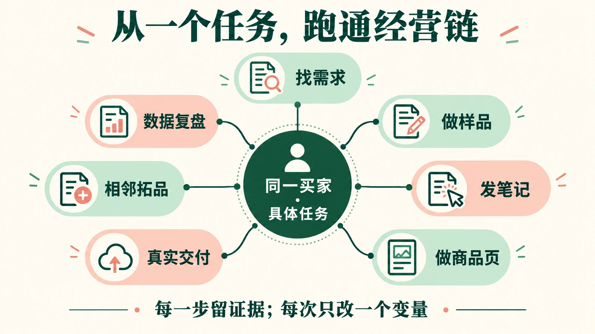
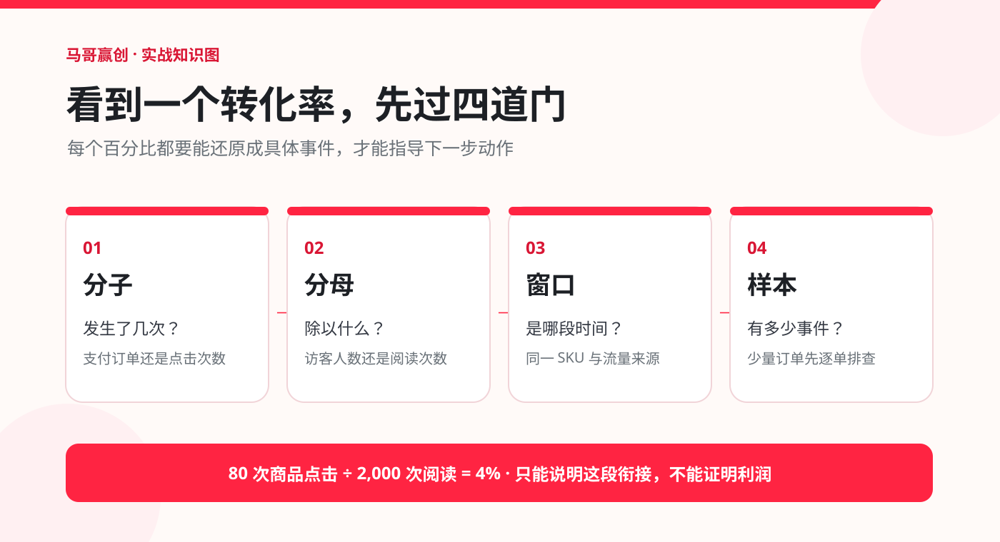
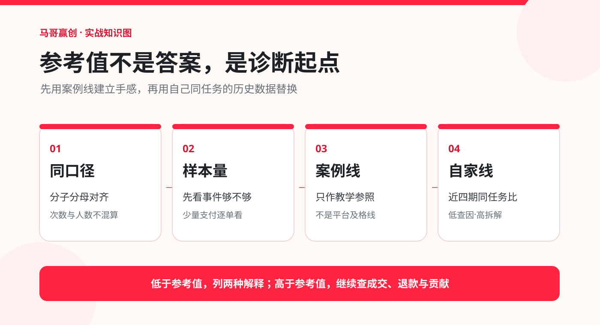
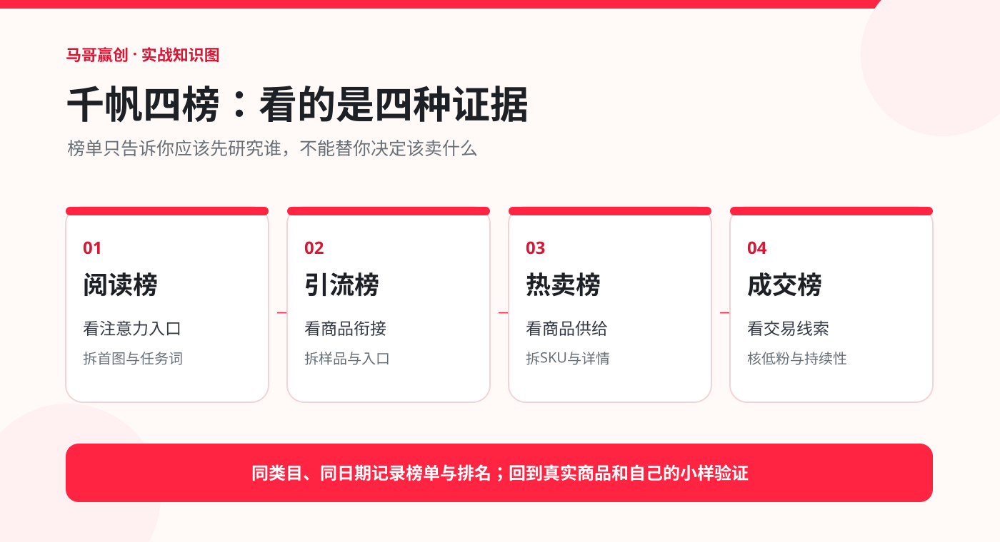

一张买家卡
谁付款、什么时候要、买完能完成哪一件事。
做小红书虚拟电商，最难的不是“知道很多玩法”，而是选定一类买家，把商品、内容、数据和交付接成一条真实可用的链。
先完成一个具体买家的第一款商品，再决定要不要扩。
进入每一课，还能看到对应的完整知识图解。

阅读、商品点击、支付、退款、完成使用，分别回答不同问题。教程把指标写成能计算、能解释、能决定下一步的工作表。
谁付款、什么时候要、买完能完成哪一件事。
能让陌生人照说明完成一次任务，而不是堆文件。
记录阅读、商品点击、付款和交付，缺测就写缺测。
先定位你现在卡在哪一环。每个回答给出判断、动作或核查口径，并能直接跳到对应的课程。
可按关键词搜索问题与回答；点击分类快速缩小范围。
换一个更短的关键词，或切换到“全部问题”再找。
这里的状态由你自己记录。先写独立答案，再按标准自检，最后换一个场景重做。
先想结论与下一步，再展开答案。
每张卡对应一章。看完答案，回课程做一次实际判断。
从笔记分发、商品点击、支付售后到千帆四榜，按一条经营链路理解。下方参考线用于训练判断，不是平台统一及格线；后台字段以你当前账号的指标注释为准。
顺着箭头问，卡在哪一格就去查那一格。

以下四组是个别实操样本使用的区间，仅用于新手练习。同类、同窗、同口径才能比较。
低：核人群和首图；高：拆标题与画面，但仍要看商品点击。
低：看内容是否具体；高：辨别互动是否来自目标买家。
低：查样品与商品承诺；高：核支付是否跟上。
低：先排支付和 SKU 问题；高：继续看退款与服务成本。
这些数值是案例经验，不是官方标准或全行业均值。阅读达到约 500—1,000 次可作第一轮观察；支付只有几单时，先逐单看原因，不能凭一个百分比判断好坏。其他指标优先用自己近 4 期同口径中位数建立基线。

输入同一指标、同一 SKU、同一来源、相邻四个统计窗口的百分比。结果仅供复盘提醒，不代表平台合格线。
练习规则：低于中位数的 80%，优先核对数据与掉点；在 80%—120% 之间，继续积累同口径样本；高于 120%，记录做法并复测。样本少、流量结构变了或活动期，先别下结论。
每行可展开：出处、例子、低于参考值和高于参考值分别怎么做。
| 指标 · 解决的问题 | 是什么 · 怎么算 | 在哪里看 | 参考线 · 下一步 |
|---|
榜单中的“优秀内容”和“优秀账号”要分开看；排名和区间都是当期线索。

以下数字为教学模拟，不是平台真实样本；实际判断先对齐统计窗口与目标 SKU。
示例：曝光 20,000，阅读 800，阅读率 4%。先核来源与阅读口径，再比首图、标题和任务词。一次只改首图，复查同来源阅读率。
示例：阅读 1,600，商品点击 64，阅读到点击 4%。查挂品状态、商品入口与内容承诺；让笔记展示一项交付结果，再复测。
示例：商品点击 100、支付 2，简化点击到支付率 2%。先查目标 SKU、价格、详情首屏、支付路径及用户疑问；不能直接称为后台支付转化率。
示例：支付 50 单、退款 10 单，订单退款率 20%。按退款原因拆分，核文件可用性、设备兼容与售后答疑，再修交付说明。
先把“现象→两种解释→所需证据→只改一项→复查日期”写完整。能把每个百分比的分母说出来，才算真正开始用数据做经营。
“在同一 SKU、近 7 天，____ 次阅读带来 ____ 次商品点击；点击率为 ____。我猜是 ____ 或 ____。先核 ____，只改 ____，在 ____ 复查。”
同一统计窗口、同一商品版本、同一流量来源，才适合放到一条漏斗里比较。输入仅在本页计算，不会上传。
默认数字是教学模拟；换成自己的同窗口数据，再读诊断。点击和订单若分别为次数、人数，须在自己的表里另行注明。
填自己的样本、时间窗和 SKU。下载后在表格软件里继续记录。
我是马哥，马哥赢创的主理人。我从工厂维修电机起步，自学电商，后来做过电商代运营、品牌方与电商总监的工作。现在我一人全职实践内容、数字产品和个人品牌。
我也做过小红书虚拟电商课程，用文档、资料和答疑交付。它让我看清一件事：资料再完整，缺少任务、反馈与验收，学员也不容易把知识用出来。所以这里每一章都要求你写下自己的判断、拿出一份产物。
从一个买家的一个任务切入，做能使用的小样，不先造全品类资料库。
搜索、点击、付款和售后各有意义；猜错了就按数据改，不把一篇爆文当答案。
买家收到、打开、完成任务，经营才真正走完一圈。